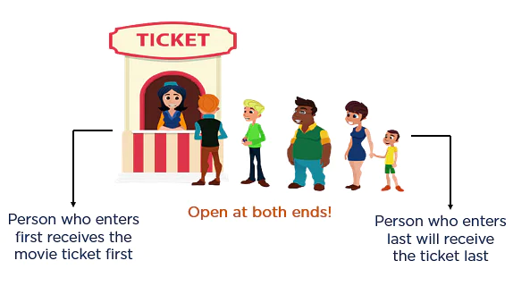
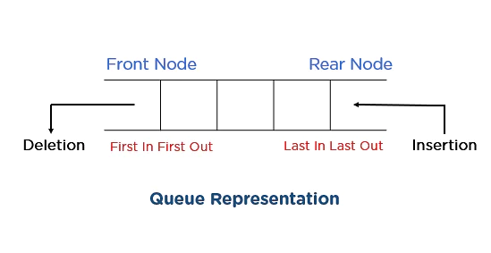
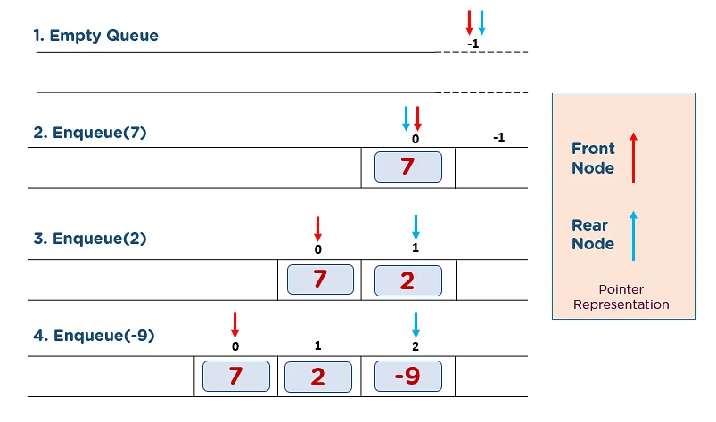

Queue in Data Structures
Queue in data structures is a linear collection of different data types which follow a specific order while performing various operations. It can only be modified by the addition of data entities at one end or the removal of data entities at another. By convention, the end where insertion is performed is called Rear, and the end at which deletion takes place is known as the Front.
These constraints of queue make it a First-In-First-Out (FIFO) data structure, i.e., the data element inserted first will be accessed first, and the data element inserted last will be accessed last. This is equivalent to the requirement that once an additional data element is added, all previously added elements must be removed before the new element can be removed. That’s why more abstractly, a queue in a data structure is considered being a sequential collection.
REAL LIFE EXAMPLE
The movie ticket counter is an excellent example of a queue where the customer that came first will be served first. Also, the barricades of the movie ticket counter stop in-between disruption to attain different operations at different ends.

The queue in the data structure acts the same as the movie ticket counter. Both the ends of this abstract data structure remain open. Further, the insertion and deletion processes also operate analogously to the wait-up line for tickets.
REPRESENTATION OF QUEUE
The following diagram tries to explain queue representation as a data structure:

A queue can be implemented using Arrays, Linked-lists, Pointers, and Structures. The implementation using one-dimensional arrays is the easiest method of all the mentioned methods.
Basic Operations for Queue in Data Structure
Unlike arrays and linked lists, elements in the queue cannot be operated from their respective locations. They can only be operated at two data pointers, front and rear. Also, these operations involve standard procedures like initializing or defining data structure, utilizing it, and then wholly erasing it from memory.
Enqueue() Operation
The following steps should be followed to insert (enqueue) data element into a queue -

Dequeue() Operation
Obtaining data from the queue comprises two subtasks: access the data where the front is pointing and remove the data after access. You should take the following steps to remove data from the queue -